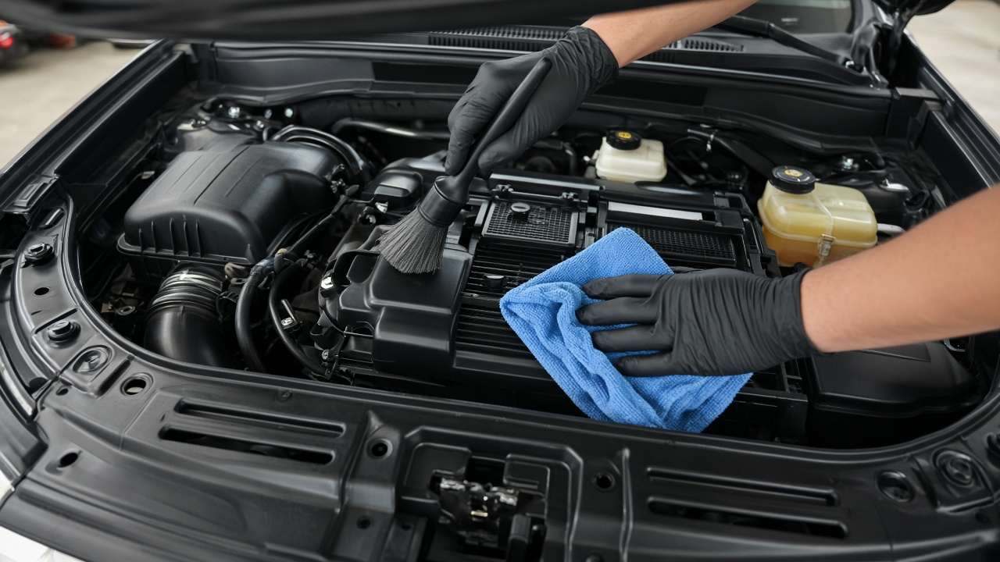

엔진룸 스팀 세척, 현대 기아 설명서가 전기회로 고장을 경고한 이유와 안전한 청소 순서
보닛을 열었다가 먼지와 기름때가 잔뜩 앉은 엔진룸을 보고 스팀으로 한 번 싹 쏘고 싶었던 적 있으시죠. 세차장이나 출장세차에서 엔진룸 스팀 청소를 권하는 경우도 있고요. 그런데 10월 16일 더드라이브 보도에 따르면 이 작업은 잘못하면 전기 전자장치 고장으로 이어질 수 있어서 제조사들도 따로 주의를 당부하고 있습니다. 내 차에 해도 되는지, 한다면 어떤 순서로 해야 하는지 하나씩 정리해 볼게요.
엔진룸 스팀 청소, 무엇이 문제일까
스팀 청소기는 일반 세차로 닿기 어려운 틈까지 때를 불려 벗겨 낸다는 장점이 있습니다. 문제는 엔진룸 안에 물과 열에 약한 부품이 몰려 있다는 점이에요. 고온 스팀을 커넥터나 센서, 배선에 직접 쏘면 손상될 위험이 있다는 것이 기사의 설명입니다. 그래서 엔진룸 청소를 생각하고 계신 분이라면 깨끗해지는 정도보다 먼저 내 차가 스팀을 받아도 되는 차인지를 확인하는 것이 순서입니다.
현대 기아 포드 설명서가 말하는 것
현대차는 일부 차량 사용설명서에서 엔진룸을 물로 세척하면 내부 전기회로에 고장이 생길 수 있다고 적어 두었고, 전기 전자부품에 물이나 액체가 닿지 않도록 주의하라고 안내합니다. 기아도 엔진룸 물 세척과 고압 세척이 전기회로 고장을 일으킬 수 있다고 경고합니다. 포드는 일부 차량 설명서에서 엔진룸 스팀 세척 자체를 피하라고 안내하고 있고요. 여기서 하나 기억해 둘 점이 있습니다. 전기 부품을 비닐로 감쌌다고 해서 스팀 세척이 안전해지는 것은 아니라는 겁니다. 결국 차종마다 설명서 지침을 먼저 확인하는 것이 가장 확실합니다.
그래도 스팀 청소를 한다면 지켜야 할 순서
제조사가 막지 않는 차라면 전문가들이 권하는 순서는 이렇습니다. 먼저 엔진을 끄고 2시간 정도 충분히 식힙니다. 기아 설명서도 엔진룸 점검은 엔진을 멈추고 식은 뒤에 하라고 안내하는데, 그렇지 않으면 화상을 입을 수 있기 때문입니다. 같은 설명서에는 냉각팬이 전기로 제어되는 차는 시동이 꺼져 있어도 팬이 돌 수 있다는 주의도 있으니 손을 넣기 전에 꼭 염두에 두세요. 그다음 민감한 전기 부품을 보호한 상태에서 떼어 낼 수 있는 플라스틱 엔진 커버를 분리합니다. 오염된 곳에 자동차용 세정제나 기름때 제거제를 뿌리고 몇 분 기다려 때가 풀리게 한 뒤 스팀으로 찌든 때를 걷어 냅니다. 끝나면 극세사 타월로 남은 물기를 닦고 충분히 말려 주면 됩니다.

하이브리드 전기차와 최신 차는 더 신중하게
기사에서는 전자장비가 많은 최신 차량이나 하이브리드차, 전기차는 더욱 신중해야 한다고 짚었습니다. 센서와 배선이 많을수록 스팀이 닿으면 안 되는 자리도 늘어나기 때문이에요. 전문가들은 제조사가 스팀 세척을 허용하지 않는 차라면 무리하게 작업하지 말고 부드러운 브러시와 극세사 타월로 먼지를 털어 내는 편이 안전하다고 조언했습니다. 세차장에서 엔진룸 서비스를 권받았을 때도 내 차 설명서에 어떤 경고가 있는지 한 번 확인하고 맡기시는 게 좋겠습니다.
엔진룸 청소로 얻는 것과 얻지 못하는 것
엔진룸이 깨끗하면 엔진오일이나 냉각수가 새는 흔적을 빨리 발견할 수 있고 정비도 수월해집니다. 공기 흡입구 주변에 쌓인 낙엽이나 이물질을 치우면 공기 흐름이 막히는 문제도 예방할 수 있고요. 반대로 엔진룸을 청소한다고 출력이나 연비가 좋아지지는 않습니다. 시동 불량이나 공회전이 불안한 증상도 세척만으로는 해결되지 않습니다. 전문가들 표현대로 엔진룸 청소는 성능을 올리는 작업이라기보다 예방 관리에 가깝다고 생각하시면 됩니다.
참고한 기사: 더드라이브 엔진룸에 스팀 쐈다가 낭패, 현대 기아도 경고한 세차법 2026년 10월 16일, 기아 공식 사용설명서 엔진룸 점검 시 주의 사항
태그
엔진룸청소 엔진룸스팀세차 스팀세차 세차주의사항 현대차사용설명서 기아사용설명서 엔진룸물세척 하이브리드차관리 전기차세차 차량관리